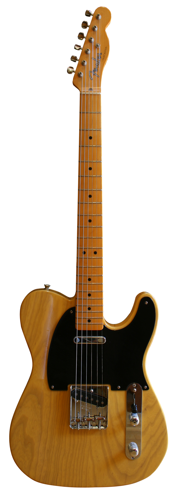
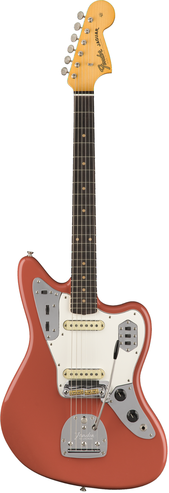
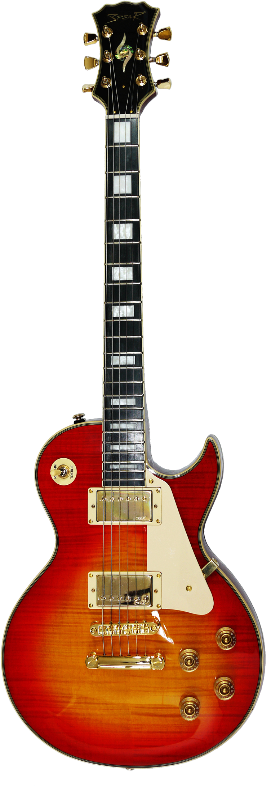
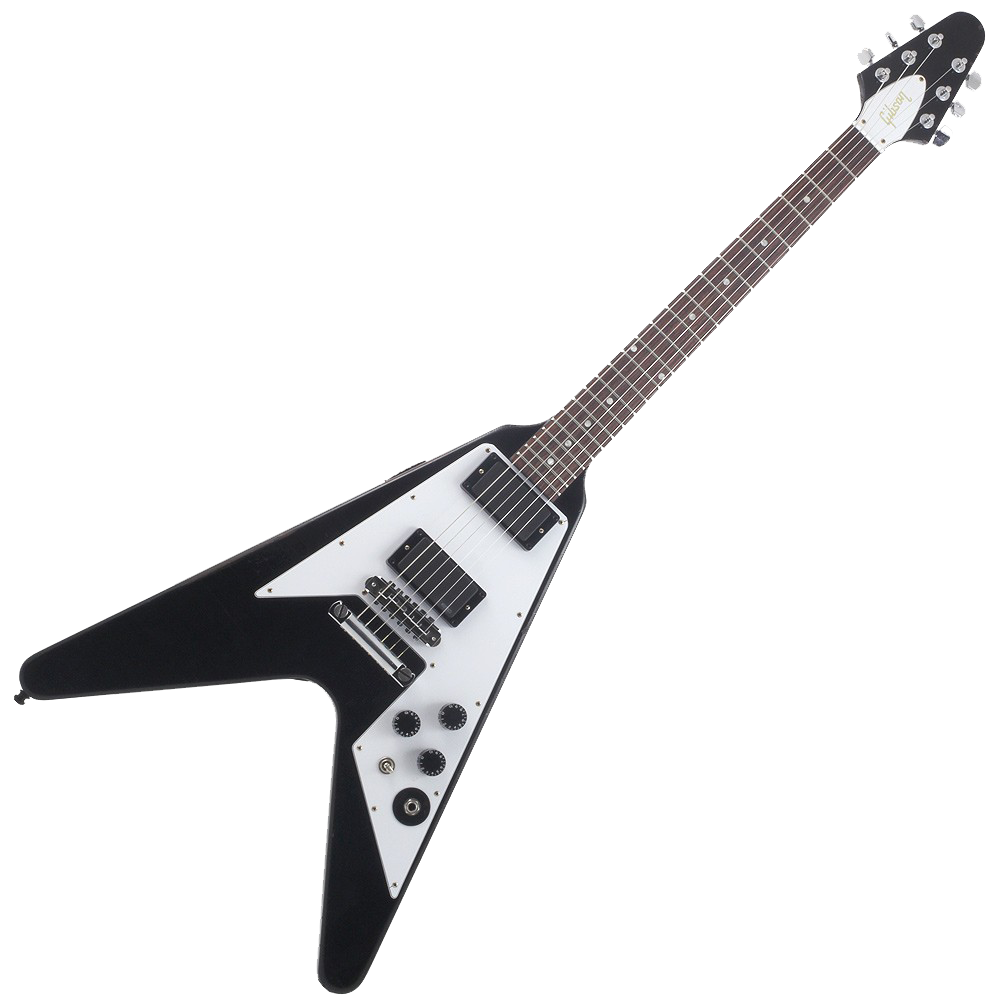
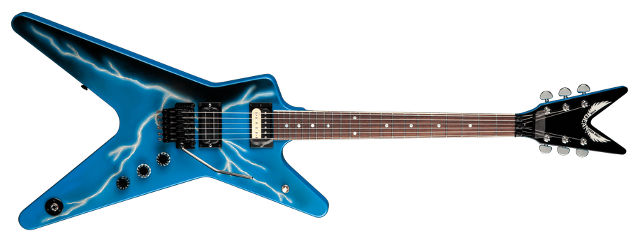
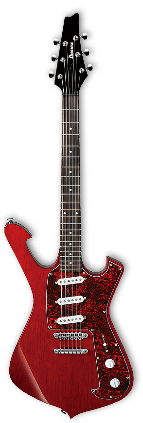

Stratocaster

The Stratocaster is perhaps the most iconic guitar model/shape.
Produced by Fender since 1952, the Stratocaster is one of the most gorgeous guitar
ever made. Other brands also make models of the same
format, such as jackson, ibanez, charvel, among others. Fun fact: The creator of this model,
Leo Fender didn't really know how to play the guitar. To create this model, Leo spoke with
several guitarists and asked what they would like on a guitar, varying from shape to
to the electrical components.
Telecaster
With a more modest design but equally iconic and elegant format, the
Telecaster is widely known for its ideal sound for Blues and Country.
It began production in 1950, with its design created by Leo Fender.
This type of guitar usually features simpler electronics that are easier
to understand and modify.
Jaguar
To this day, it's not clear why Fender created such an
abomination. Many point out that it was an attempt to create a guitar to play
jazz and smurf, despite not having received much appeal from guitarists
of both musical genres. The Jaguar only gained its popularity
after Kurt Cobain appeared on stage with one (Nirvana Guitarist).
He placed tape on the selector switches located on the left side of the guitar,
as they bothered him while he played, due to his aggressive strumming.
Les Paul
Another model with an iconic shape, but from Gibson.
A brand that has (almost) always been synonymous with quality, presenting models with
interesting and appealing designs. The Les Paul, designed by a
deisgner with the same name ,has an elegant look and a weight worthy of a truck. It's also
a very versatile guitar, being used in rock, hard rock and even in some
heavy metal bands.
SG

Simply the most attractive double cut format ever created.
This sentence is enough to describe the SG model, but it deserves this and much more
to say about it. With a mahogany body, it's best known in its red color.
SG is the favorite of two music stars, Angus Young from AC/DC and Tony Iommi,
from Black Sabbath.
Flying V
A guitar also made by Gibson with a heavy look
but with a classic "feel". This is due to its rounded vertices,
giving the instrument an appealing look. The flying V is mainly used for Rock and Metal, having
passed through the hands of Michael Schenker (U.F.O.), Kirk Hammet (Metallica) and even
by rock pioneer Jimi Hendrix.
This guitar format would lead to the creation of other models, such as the King V.
Arrow
Little can be said about Arrow. Currently, this model is only sold
by ESP, having an identical shape to the flying V, but with a more aggressive and heavier touch.
This is commonly equipped with "Floyd Rose" bridges. It has a V-shape, however
more reminiscent of the shape of an arrow.
ML
The ML format is one of the most iconic formats with the greatest combination of
hardware and visuals. Dean has always been focused on models with more elegant,
extravagant and appealing looks, and their sound never leaves a guitarist hanging.
The ML format gained popularity after passing through the hands of Dimebag Darrel,
Pantera's guitarist.
Iceman
A format mainly manufactured by Ibanez, a Japanese brand
with several interesting models. This one is the Iceman, a guitar
with a very peculiar and interesting format. This guitar is mainly known
due to the fact that Kiss guitarist and vocalist Paul Stanley has an Iceman model, which he
used in almost all of his live performances.